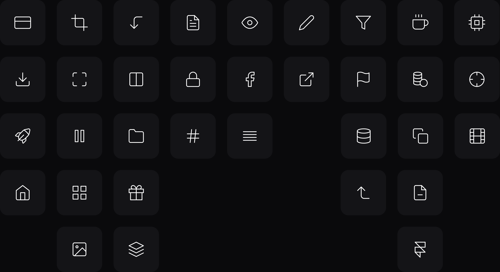
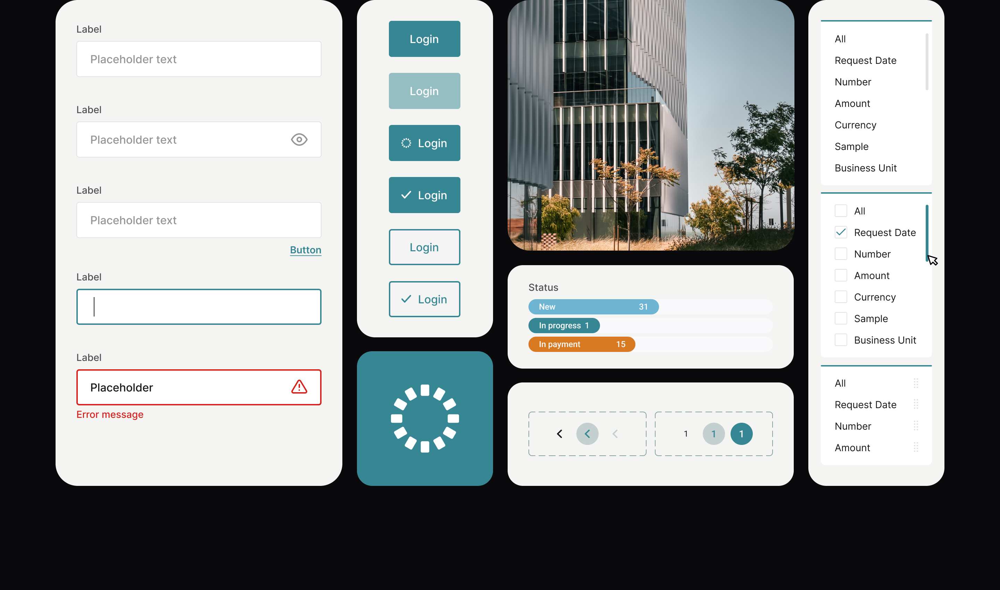
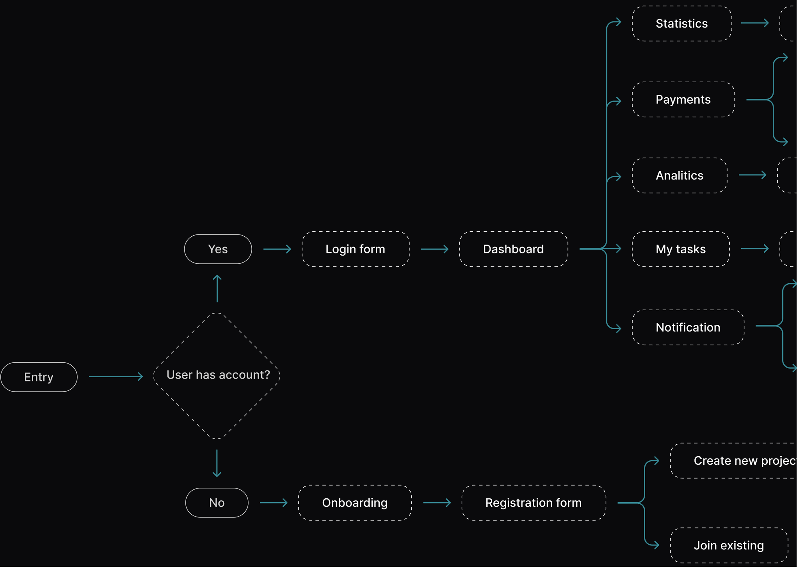
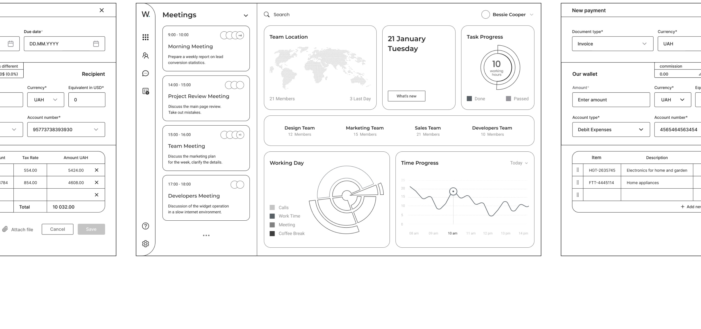
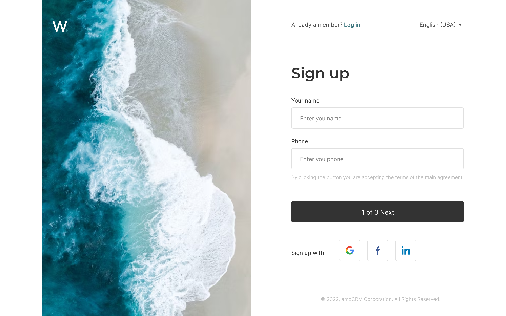
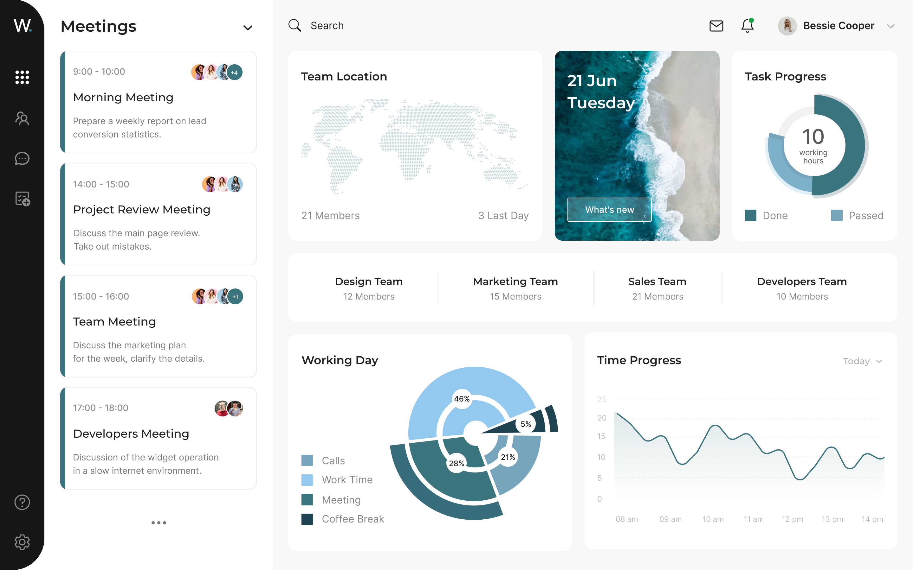
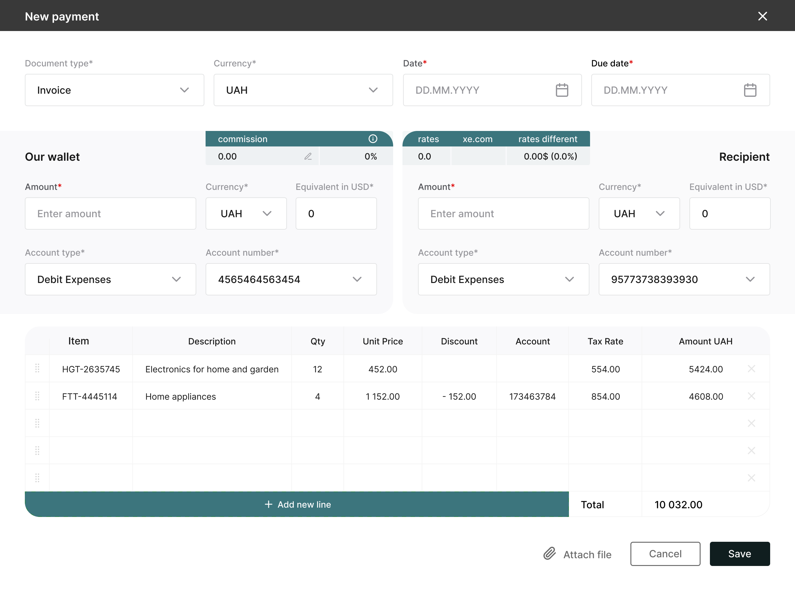
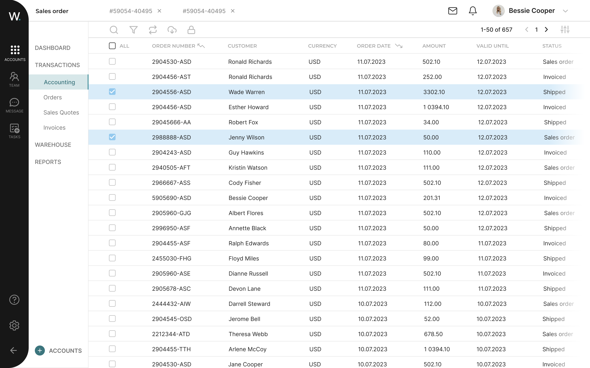
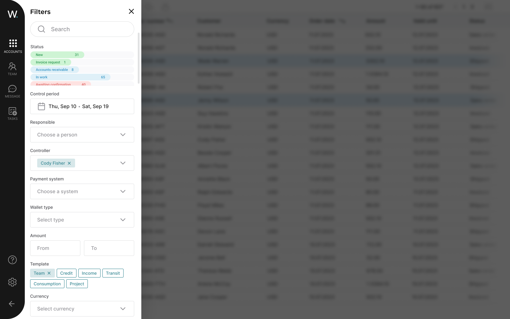
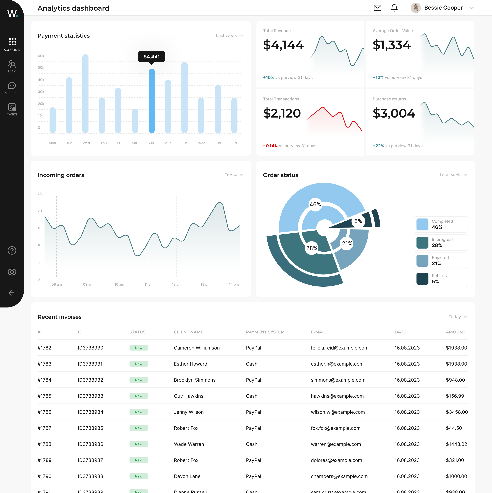

ERP & CRM — Wave
Developing a high-load
system from scratch
Overview
Wave is an ERP & CRM System for one of the bigger media holdings in Ukraine.
This System helps to run businesses, supporting automation and processes in finance, human resources, supply chain, services and more.
The main problem
Multiple disconnected tools
Employees had to juggle separate systems for every task — no single source of truth.
No unified workspace
Context-switching between apps created friction and reduced overall productivity.
Manual, error-prone processes
Without automation, finance and HR teams spent hours on tasks that should take minutes.
Branding
Typography and colors
Inter
Branding
Icons

Design system
Main components preview


User survey
A user Survey was conducted on 20 participants. As a result, a few additional insights were also received and these data give confidence in next initial desk research findings.

"I'll be honest — our team needs something simple. I'd like everyone knew what they were working with, and we had no misunderstandings"
"I want to have one system where I can perform all work processes without using additional resources"
"I need to track the status of payments and applications. In the system that our company uses, I do not have such an opportunity"
"I have an issue with the time management, and its would be great if tools would help me get my time right"
User flow
User Flow Overview

Wireframes
The next step was to create wireframes based on research and user flows.

Final results
Pre-designed layouts for main pages
Sign up / Log in page

Home page

New payment page

Pivot table

Filters

Analytics

Success metrics
Quantifiable improvements in workflow efficiency and data accuracy.
Payment creation was reduced from many screens across a few systems to a single unified flow
Time-on-task cut from 40 min to 10 min per payment cycle
Reconciliation errors were eliminated through system-level validation, with no additional headcount